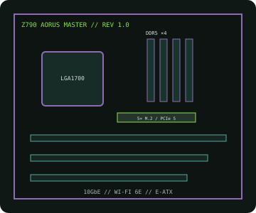

[ INDIVIDUAL COMPONENT // MOTHERBOARDS ]
GIGABYTE Z790 AORUS MASTER (rev. 1.0)
LGA1700 Z790 E-ATX flagship for Intel desktop processors, with DDR5, PCIe 5.0, five M.2 sockets, 10GbE and Wi-Fi 6E.

IDENTIFICATION: Exact model/revision is Z790 AORUS MASTER rev. 1.0. This is the original MASTER product, not MASTER X. Match the PCB revision before installing firmware.
Specifications
| Exact board / revision | GIGABYTE Z790 AORUS MASTER, rev. 1.0 |
|---|---|
| Socket / chipset / CPU | LGA1700, Intel Z790 Express; 12th, 13th and 14th Gen Intel Core desktop processors as listed for rev. 1.0 and the required BIOS. |
| Form factor | E-ATX, approximately 305 × 269 mm; verify case clearance and standoff compatibility. |
| Memory | Four dual-channel DDR5 DIMM sockets, up to 256 GB; XMP rates and DIMM density depend on CPU, BIOS and QVL. |
| PCI Express | One CPU-connected PCIe 5.0 x16 slot and two chipset-connected x16-length slots (PCIe 4.0 x4 and PCIe 3.0 x1 electrical modes); consult the manual for lane allocation. |
| Storage | Five M.2 sockets (one PCIe 5.0 x4 and four PCIe 4.0 x4) plus four SATA 6 Gb/s ports; confirm exact port sharing in the manual. |
| Networking / I/O | Marvell 10GbE LAN, Intel Wi-Fi 6E/BT and USB 3.2 Type-C/Type-A ports; rear I/O and internal connector details are in the revision-specific manual. |
| BIOS / compatibility | 12th–14th Gen CPU compatibility is model- and BIOS-specific. Check the rev. 1.0 support list, minimum firmware and DDR5 QVL. |
Compatibility and service notes
Use the original Z790 AORUS MASTER rev. 1.0 CPU list and BIOS; do not use MASTER X firmware. LGA1700 CPUs from different generations may require a firmware update. Install DDR5 only and verify PCIe lane allocation, M.2/SATA sharing and E-ATX clearance before assembly.
Record the PCB revision and BIOS identifier before service. Observe ESD precautions and use the exact board-specific firmware package.
Manufacturer sources
- GIGABYTE — Z790 AORUS MASTER rev. 1.0 specificationsOfficial specifications, layout and manual for this model.
- GIGABYTE — rev. 1.0 CPU support and BIOSCheck the exact processor list, minimum BIOS and memory QVL.